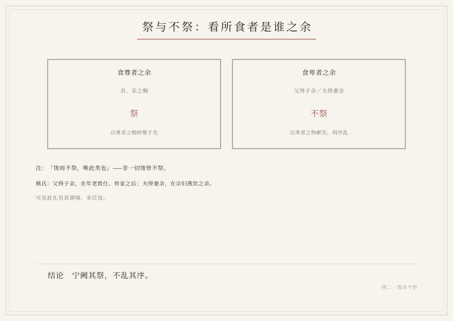

曲礼上 · 一·八十 · 第 78 课
食人之余叫馂。凡食馂多不祭先，唯此两类为然；而「父不祭子，夫不祭妻」是更重的一条：尊者食卑者之余，不祭。
说什么事：馂余不祭；父不祭子，夫不祭妻。
落在哪一层：礼意，兼及分。祭与不祭，系于所食者之尊卑。
为何编在此位：上节讲君赐余之处置，此节讲食余之祭。同一「余」，处置既异，祭否亦异。
【经】餕餘不祭，父不祭子，夫不祭妻。
【注】食人之餘曰餕，餕而不祭，唯此類也。食尊者之餘則祭，盛之。
馂 注「食人之余曰馂」。疏「凡食人之余，及日晚食馔之余，皆云馂」。
不祭 祭，祭先也。食前拨少许于地或器间以祭，是通礼。
唯此类也 注四字要紧：不祭者只此两类，非一切馂皆不祭。
食尊者之余则祭 注。食君亲之剩，反当祭，以其所出者盛。
父不祭子，夫不祭妻 尊者得卑者之余，不祭。疏「言其卑故也」。
父得有子余 熊氏：年老致仕，传家事于子孙，子孙有宾客之事，故父得馂其子余。
夫馂其妻余 疏：宗妇与族人妇燕饮有余，夫得食之。
食人之余不祭；父亲不祭儿子之余，丈夫不祭妻子之余。
一节讲「祭」与「不祭」的分界。祭是把食物先献给所敬者；食尊者之余而祭，是把尊者之物转献于更上，其意厚；食卑者之余而祭，是以卑者之物为献，其序乱。故宁不祭。
第一层 馂之名 剩食称馂，非贬词，是一个名分：此食已属于他人之口。
第二层 尊者之余则祭 食君亲之剩而祭，是以君亲之赐转敬于先。祭在此处不是疑其不洁，是加一层敬。
第三层 父不祭子，夫不祭妻 子与妻皆卑于父与夫。以卑者之余献先，则先所受者卑。礼宁阙其祭，不乱其序。
第四层 熊氏疏解之实 父得子余，须是年老致仕、家事已传；夫得妻余，须是宗妇燕饮有余。可见此礼有其具体情境，非泛设。
与今日何干 家里长辈吃晚辈带回的剩菜，不必先摆一副「敬过祖先」的架势；而晚辈吃长辈留的饭，先让一让、说一声，是此礼的余意。
| 左 | 右 |
|---|---|
| 馂 | 食人之余，及日晚食馔之余 |
| 馂余不祭 | 不祭者唯此类，非一切馂 |
| 食尊者之余则祭 | 以尊者之赐转敬于先 |
| 父不祭子 | 尊者食卑者之余，不祭 |
| 夫不祭妻 | 同上，序不可乱 |
| 熊氏情境 | 父得子余在致仕传家之后 |
画两处食案对照：左侧一器余食旁置一小碟，碟中拨出少许，示祭；右侧一器余食旁无碟，器盖已合。两案之间一枚竹签横置，示分界。不画人、不写文字。赭色只在左侧小碟边缘。
